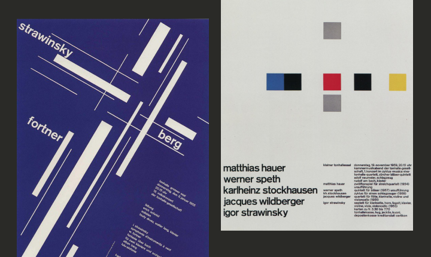
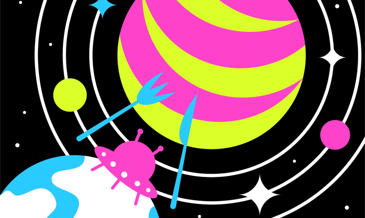

Содержание
Классический плакат
Классический плакат — штука довольно прямолинейная. Он висит на стене, смотрит на вас, и у него есть ровно одна попытка сказать всё, что нужно. Никакого второго шанса, никакой навигации, никакого «нажмите, чтобы узнать больше». За полтора столетия существования этот формат научился работать с вниманием зрителя невероятно точно — и именно поэтому стоит разобраться, что веб-плакат от него унаследовал, а что изменил, когда плакат переехал в браузер.

Одно сообщение на взгляд
У печатного плаката есть характерное свойство, которое определяет всё остальное: он существует в одном состоянии. Зритель видит его целиком и сразу — всю композицию, всю типографику, все цвета. Йозеф Мюллер-Брокманн, один из тех дизайнеров, чьи плакаты для Цюрихского Тонхалле стали каноном швейцарского стиля, описывал задачу плаката так: передать информацию с визуальным напряжением и драматургией, используя при этом минимум средств.
Собственно, вся история классического плаката — от парижских афиш Жюля Шере, которые превращали улицы в галереи, до конструктивистских работ Родченко с их акустической мощью — строилась вокруг этого ограничения. Один лист, фиксированный формат, неизменная композиция. Зритель не может перемотать плакат, не может нажать на него, не может провалиться в детали. Всё, что автор хотел сказать, должно быть считано за секунды. Мюллер-Брокманн и Шизуко Ёсикава в своей книге «Geschichte des Plakates» (1971) формулируют функцию плаката ёмко:
Плакат должен информировать, стимулировать, активировать, объяснять, вопрошать, провоцировать, убеждать.
Обратите внимание — все глаголы описывают одномоментное действие. Возникает то, что можно назвать нелинейностью чтения. Печатный плакат при всём желании читается одним способом — его композиция фиксирована, и вы воспринимаете её целиком. В веб-плакате можно спрятать элементы, которые появляются при наведении. Можно выстроить сценарий, в котором одно и то же пространство раскрывается по-разному в зависимости от действий зрителя. Содержание становится многослойным.
Плакат во времени
Вот здесь начинается территория веб-плаката. Когда плакат переезжает в браузер, у него появляется нечто, чего у печатного аналога не было и быть не могло, — темпоральность. Время становится ещё одним измерением, с которым работает автор. CSS-анимации позволяют элементам вращаться, масштабироваться, менять цвет, появляться и исчезать. И если в печатном плакате дизайнер имитировал движение через диагональные композиции и экспрессивные приёмы, то в веб-плакате движение реально. Оно происходит перед глазами зрителя.
Представьте себе плакат Эль Лисицкого «Клином красным бей белых» — он весь построен на ощущении стремительного направленного движения. Но это движение зафиксировано, заморожено в печатной форме. В веб-плакате такой приём может буквально развернуться во времени: красный клин может влетать в композицию, белый круг — разрушаться, типографика — появляться по мере скролла.
Дизайнер получает контроль над темпом восприятия. Можно замедлить подачу информации, выстроить паузы, создать ритмическую структуру, в которой смена состояний работает как монтаж в кино. Скролл разворачивает плакат как повествование — экран за экраном.
Соучастник плаката
У зрителя печатного плаката ровно одна роль — наблюдатель. Он декодирует композицию, эмоционально откликается на форму, считывает сообщение. Взаимодействие остаётся односторонним: автор транслирует, зритель воспринимает. Кенья Хара, арт-директор MUJI и один из заметных японских дизайнеров-теоретиков, описывает хорошую коммуникацию как «пустой контейнер» — форму, которая не навязывает интерпретацию, а оставляет пространство для наполнения смыслом. Печатный плакат, при всей своей выразительности, остаётся в этом смысле монологом: автор наполнил контейнер, зрителю остаётся его расшифровать.
В веб-плакате происходит нечто принципиально иное. Зритель перестаёт быть зрителем в пассивном смысле — он становится участником. Наведение курсора, клик, скролл, движение мыши — всё это превращается в инструменты исследования содержания. Ярослав Субботин, один из преподавателей Школы дизайна, формулирует это так: «Мы нажимаем на кнопочки, что-то происходит, и мы радуемся этому событию». Звучит просто, но за этим стоит принципиальный сдвиг: коммуникация перестаёт быть посланием от автора к зрителю. Она становится процессом, в котором действие зрителя влияет на визуальное состояние работы, открывает скрытые слои, меняет композицию.
Интерактивность в веб-плакате — это не развлечение ради вовлечения и не геймификация. Она расширяет арсенал того, как плакат может разговаривать со зрителем. Хороший интерактив поддерживает высказывание, плохой — отвлекает от него.
Из улицы — на экран
Контекст восприятия тоже кардинально меняется, и этот момент стоит проговорить, потому что он сильно влияет на то, как автору стоит думать о своей работе.
Классический плакат рождался для публичного пространства — улицы, витрины, метро. Он конкурировал за внимание с городским шумом, другими плакатами, рекламой, прохожими. Отсюда его визуальная агрессивность, крупные формы, контрастные цвета. Плакат на улице — это, по сути, крик. Привлечь, удержать, донести за доли секунды, пока человек проходит мимо.
Веб-плакат существует в совершенно другой ситуации. Он открывается на личном экране — ноутбуке, телефоне. Зритель уже пришёл к нему, уже нажал на ссылку, уже выделил время. Здесь не нужно кричать. Можно говорить тише, медленнее, разворачивать мысль постепенно. Этот контекст допускает более глубокое и длительное взаимодействие — без давления внешнего информационного потока.
Впрочем, не стоит думать, что переезд на экран лишает плакат необходимости захватывать внимание. Конкуренция просто сместилась — теперь это не соседние плакаты на стене, а соседние вкладки в браузере, уведомления в телефоне и бесконечная лента социальных сетей. Первый экран веб-плаката должен работать с таким же чувством визуальной точности, что и печатный плакат, — просто инструменты для этого другие.
Одна страница, один формат
При всех различиях между печатным и веб-плакатом у них есть одно общее структурное свойство: оба существуют как завершённое целое на ограниченном пространстве. Печатный плакат ограничен размером листа, веб-плакат — рамкой одной HTML-страницы.
Ограничение оказывается не менее продуктивным, чем для печатного формата. Одна страница означает, что вы не можете решить проблему архитектурно — добавив ещё один раздел, ещё одну вложенную страницу, ещё один уровень навигации. Всё содержание должно уместиться в едином пространстве. И именно это заставляет думать о каждом элементе пристальнее, о каждом решении — строже.
Правда, есть нюанс. Печатный плакат всегда имеет фиксированные пропорции — A1, A2, B1 и так далее. У автора нет возможности изменить формат в процессе: бумага не растягивается. Веб-плакат живёт на экранах разных устройств — от широкого монитора до вертикального смартфона. Это добавляет ещё одно измерение проектирования: адаптивность. Одна и та же композиция должна сохранять выразительность при совершенно разных пропорциях экрана. Для дизайнера, привыкшего к фиксированному листу, это новый вызов — и новая возможность.

Что сохраняется, что остаётся
Если собрать всё вместе, картина выглядит примерно так. Веб-плакат наследует от печатного коммуникативную природу — он остаётся носителем сообщения, авторского высказывания, визуальной идеи. Он сохраняет рамку одностраничности и ощущение завершённого опыта. Он по-прежнему работает с композицией, типографикой, цветом, ритмом. При этом он трансформирует способ взаимодействия со зрителем. Коммуникация разворачивается во времени, становится нелинейной, требует активного участия.
Дизайнер работает с движением, реакцией на действия пользователя и сценарием восприятия — а не с одним зафиксированным состоянием. Для дизайнера, который приходит в веб-плакат из графического дизайна, это означает хорошую новость: навыки композиции, типографики и визуального мышления переносятся сюда напрямую. Но к ним добавляется новый слой — умение думать о времени, состояниях и взаимодействии.